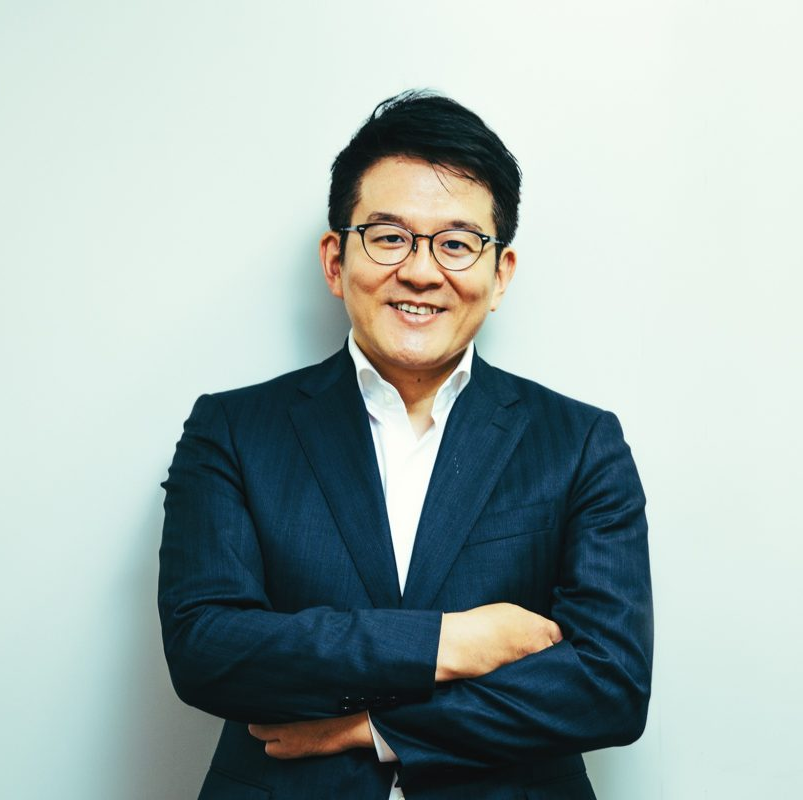

発表資料へ
Student Project第７回 筑波大学
サービス工学シンポジウム
2021.02.12(Fri)
13:00 〜 18:30 @online

Schedule
第一部 13:00 ~ 14:15 |
開式の辞 | 藤川 昌樹 | 筑波大学 社会工学域 |
| 来賓祝辞 | 浅野 大介 様 | 経済産業省 サービス政策課長 教育産業室長 | |
| 基調講演 | 阿部 吉倫 様 | Ubie株式会社 共同代表取締役医師 | |
第二部 14:30 ~ 15:30 |
データサイエンス・ケースバンク ローンチ コンセプト紹介・デモ |
鈴木 勉 大山 智也 |
筑波大学 理工学群 社会工学類学長 筑波大学 社会工学域 助教 |
| ディスカッサント | 船木 謙一 様 | 日立製作所 コーポレートベンチャリング室 |
第三部 15:30 ~ 17:30 |
ポスターセッション | 修士１年・修士２年の学生による研究発表 |
第四部 17:30 ~ 18:30 |
情報交換会 | 軽食を交えた自由なフロアディスカッション |
Guest speakers

浅野 大介
経済産業省商務・サービスグループ
サービス政策課長（兼）教育産業室長
サービス政策課長（兼）教育産業室長
2001年入省。資源エネルギー、物流、危機管理、知的財産、地域経済、マクロ経済分析等の業務を経て、2015年6月より資源エネルギー庁資源・燃料部政策課長補佐（部内総括）、2016年7月より大臣官房政策企画委員としてサービス政策と産業保安政策の部局再編を担当し、その際に教育産業室の発足を企画。2017年7月より大臣官房政策審議室企画官、10月より教育産業室長を兼務、2018年７月より現職。

阿部 吉倫
Ubie株式会社 共同代表取締役医師
2015年東京大学医学部医学科卒業後、東京大学医学部附属病院、東京都健康長寿医療センターで初期研修を修了。2017年5月にUbie株式会社を共同創業、全国の病院向けにAIを用いた問診システム（AI問診Ubie）の提供を始める。第３回日本サービス大賞厚生労働大臣賞受賞。2020年 Forbes 30 Under Asia Healthcare & Science 部門選出。

船木 謙一
日立製作所 コーポレートベンチャリング室
早稲田大学大学院修士課程修了（理工学研究科工業経営専門分野）後、日立製作所入社。工場設計、生産システム、サプライチェーンマネジメントシステム、サービスデザインの研究を経て、オープンイノベーション戦略の策定、実行に従事。2019年より現職。博士（工学）。INFORMS（The Institute for Operations Research and the Management Sciences）会員、IEOM（Industrial Engineering and Operations Management）Society産業委員、日本オペレーションズリサーチ学会会員、経営情報学会会員、日本経営工学会会員。